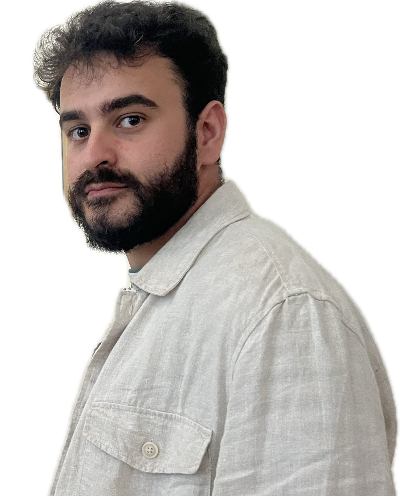

Welcome to my personal website. The purpose of this space is to support the learning I am progressively acquiring. In the ~/post tab, you will find all the articles I write while documenting my journey, that is, writings about mathematics, statistics, data analysis, operations research, game theory, artificial intelligence…
If you have arrived at this page to discuss existentialism, perhaps this is not the right forum. For that, you may want to go to Instagram and see for yourself if “man is a wolf to man” (homo homini lupus). However, don’t despair. If you’re not interested in reading anything that requires more effort than your own desire to read, you can also find a space to redeem yourself in the ~/texts tab. There, you can read some of the texts I write. Good luck if you find one that rhymes. But remember, the will to read has to come from you.
Finally, perhaps you’re not here for any of the reasons mentioned above, and you’re just reading this for some job selection process, scholarship, or something similar. In that case, I kindly ask you to forget what you have read in the previous paragraphs, check my resume in the ~/curriculum tab, and hire me.
Of course, like everything in life should, this page is subject to improvements. If you find any errors or have any advice, please feel free to contact me via the links below.
Thank you very much.
Sincerely,
Alberto Torrejón Valenzuela
“There is a difference between a thing and talking about a thing.”Kurt Gödel
I hold a double degree in Mathematics and Statistics, as well as a Master’s Degree in Mathematics, all from the University of Seville. I am currently pursuing a PhD in the Department of Statistics and Operations Research and the Institute of Mathematics (IMUS) at the University of Seville under the supervision of Justo Puerto and Miguel A. Pozo.
My research focuses on mathematical modeling, algorithmic development, and statistical methodologies for data analysis and decision-making problems. These range from robust statistics to location or vehicle routing problems. Specifically, I work on the development of ordered optimization approaches through the lens of mathematical programming. A key focus of my work is the design of fair and equitable decision-making strategies and algorithms within these frameworks.
I am a member of the Spanish Society of Statistics and Operations Research (SEIO), where I serve on the editorial team of the SEIO Bulletin, of the Spanish Location Network (REDLOCA), and the EURO Working Group on Location Analysis (EWGLA).
Beyond academic research, I actively participate in conferences, seminars, and outreach activities aimed at promoting mathematics, statistics, and operations research. I am a strong advocate for open source and maintain a special connection with the R programming language. I am one of the organizers of the SevillaR group, a local node of the R-Hispano Community. In my free time, I write and read poetry, just like my father taught me.
My personal motto: educación, ciencia y cultura.
Gafas de alambre que encajarse
barba que acicalarse,
la imagen de un intelectual
o de un mendigo con clase.
Escueto rastrero,
buscavidas sin dinero,
veces de pasajero,
a veces con miedo.
Si algún día lo perdéis,
no busquéis, no preocupéis.
Su camino emprendido,
su corazón en los vuestros,
se habrá ido,
y con lo puesto…
Scientific publications
Teaching
Research Projects Participation
PROYECTO ETNIAS — Estrategias para administración de terapias neuroprotectoras para el ictus isquémico identificado mediante biomarcadores en las ambulancias de Sevilla (PI21/01158)
Principal researcher: Dr. Joan Montaner Villalonga
Optimization on Data Science and Network Design Problems: Large-scale network models meet optimization and data science tools (PID2020-114594GB-C21)
Principal researchers: Prof. Justo Puerto, Prof. Víctor Blanco
Challenges in Combinatorial Optimization in New Models of Complex Networks and Data Science (P18-FR-1422)
Principal researchers: Prof. Justo Puerto, Prof. Antonio M. Rodríguez-Chía
New Results on Design and Optimization Problems in Complex Networks: Applications to the Design of Smart Cities (US-1256951)
Principal researcher: Prof. Justo Puerto, Prof. José Fernando López-Blázquez
Organization
XLI Congreso Nacional de Estadística e Investigación Operativa (10-13/06/2025) - University of Lleida, Lleida, Spain. Organizer of a parallel session in the conference.
5th Spanish Young Statisticians and Operational Researchers Meeting (SYSORM) (05-07/11/2025) - Institute of Mathematics, University of Seville, Seville, Spain. Organizer.
7th Congress of Young Researchers of the RSME (13-17/01/2025) - Universidad del País Vasco, Bilbao, Spain. Organizer of a parallel session in the conference.
III Congreso y XIV Jornadas de usuarios de R (06-08/11/2024) - Institute of Mathematics, University of Seville, Seville, Spain. Organizing member of the conference
XIII International Workshop on Locational Analysis and Related Problems (04-06/09/2024) - Institute of Mathematics, University of Granada, Granada, Spain. Organizer.
3rd Sevilla MINLP Workshop (30–31/03/2023) — Institute of Mathematics, University of Seville, Seville, Spain. Organizer.
Seminarios PhD (2022–2023, full academic year) — Institute of Mathematics, University of Seville, Seville, Spain. Organizer.
Los Martes Se Investiga – LMSI (2022–2023, full academic year) — Faculty of Mathematics, University of Seville, Seville, Spain. Organizer.
Awards
Runner-up in the XL Mathematical Olympiad of Cádiz (February 2016). Royal Spanish Mathematical Society.
Third prize in the II Rhetoric and Argumentation Contest (May 2015). Edith Stein Institute of Philosophy.
Undergraduate projects
… not enough? Have a look to my CV
USairpollution